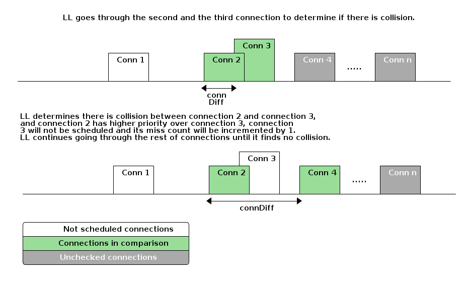
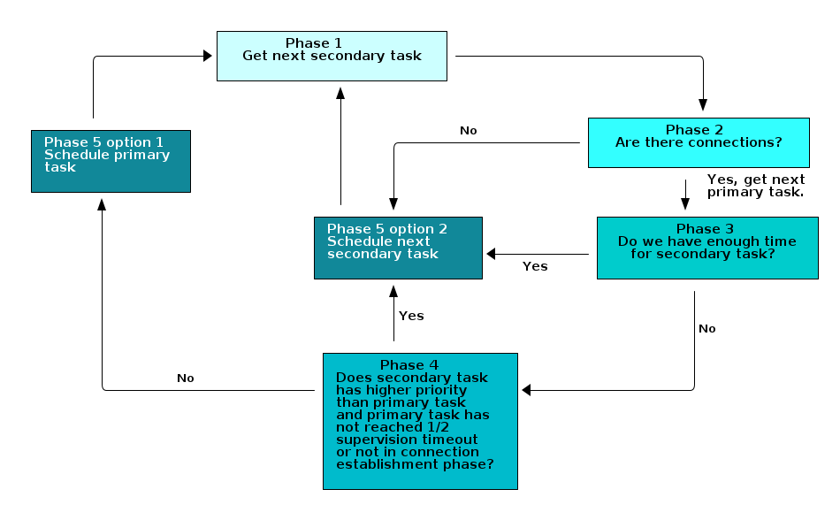
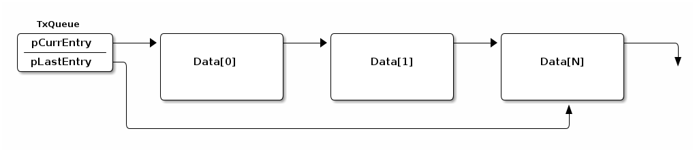
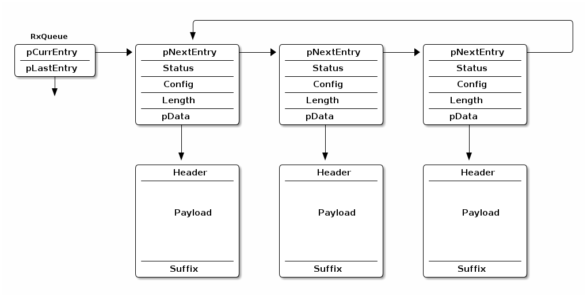

Link Layer (LL)¶
The link layer is the interface to the physical layer (PHY) and it controls the RF state of the device. In BLE, there are 5 states a device can be in.
Standby
Advertising
Scanning
Initiating
Connected
Since LL controls the RF state of the device, it means that it is also responsible for the scheduling (For example: Anchor Point), physical channel to be on and length of the packets.
There are six events that scheduler needs to take care of. These are:
Initiating
Advertising
Scanning
Periodic Advertising
Periodic Scanning
Connection
In the TI BLE5-Stack, we categorize those events into primary and secondary tasks. Only connection events are a primary task. The rest are secondary tasks.
By default, when there is a timing conflict between a primary task and secondary task, the LL will prioritize the primary task and push the secondary task to a later time. However, if the application layer specifies that the secondary task has higher priority than the primary task and the primary task has not reached half of its supervision timeout or entered connection establishment phase, the LL will prioritize the secondary task over the primary task.
Link Layer Primary Task¶
When devices enter connection state, they are either central or peripheral devices.
Central Role¶
The central device has full control over anchor points, therefore, it is possible to avoid timing conflicts.
In our BLE5-Stack, as a central device, there are 2 options for the LL scheduler to form anchor points.
The anchor points are formed randomly with no restriction on timing. This is the case for all our out of box examples.
The anchor points will be formed after previous connection event with 5ms guard time. This is achieved when you modify it through Sysconfig –> Advanced Setting –> Extended Stack Settings –> Guard Time.
Using the second option, we can achieve one central device maintaining connection with 32 peripheral devices. For more information, please refer to 32 Connections Design.
Note
TI BLE5-Stack will not move the anchor points after connection parameter updates if using the same set of connection parameters.
However, there is also a chance for central role to have timing conflicts when managing multiple connections, thus in TI BLE5-Stack we implemented a connection fairness mechanism to handle this. For more information, please refer to Connection Fairness.
Peripheral Role¶
Since the peripheral device has little to no control over anchor points, we use the connection fairness mechanism to handle any potential timing conflicts.
Connection Fairness¶
Connection fairness is implemented in the LL to make sure that each connection has an equal number of scheduled opportunities to transmit if the priorities are the same.
Before going into the detail, we need to understand how the LL determines whether there will be collisions among connections.
For each connection, the LL will calculate the minimum time required for the
whole connection event (connMinLength) based on the following parameters:
A single event which means it assumes there is no MD in the same connection event.
Phy used in the connection.
If PDU size is specified by application layer, then BLE5-Stack will take that into calculation. Otherwise, the Max PDU size is taken into account if users do not specify PDU size for the specific connection.
The processing time for the radio core and BLE5-Stack which is set to 500us.
Before each connection happens, the LL will sort all the connections based on
the future start time and calculate the time difference(ConnDiff) between
two next connection events. Then do a comparison between ConnDiff and
connMinLength. If ConnDiff is smaller than/equal to
connMinLength, then LL will conclude there is collision.
If there is no collision between connection 1 and connection 2, then
connection 1 will be selected and scheduled to send out with connection cut
off time(connMaxLength) set to one of the following:
95% of the connection interval of the selected connection if the selected connection has the highest priority.
95% of the connection interval of the selected connection if the connection interval of the selected connection is smaller than time difference between selected connection and the highest priority connection.
Time difference between selected connection and the highest priority connection.
If there is collision between connection 1 and connection 2, then LL will start looking into the priority between these two connections. This is when connection fairness comes into play. Connection fairness takes the following factors into consideration and the list below is in order of priorities from high to low:
Connection reaches half of its supervision time-out.
Connection is in the establishment phase, which means the first 6 connection events.
Connection is in a instant. For example: connection parameter update, channel map update or phy update.
Connection priority, which can be configured from application layer.
Connection with higher miss count.
Connection with earliest start time.
Note
Miss count here only represents the number of missed connection events caused by running connection fairness algorithm. The miss count will be reset to 0 if the connection event is scheduled and the peer device meets at the connection event. If the connection is chosen to be scheduled by LL but the peer device disappeared from the connection, then the miss count will not be incremented. This ensures the miss count of other connections that currently are in conflicts will eventually be higher and get to be scheduled(if not reaching half of its supervision timeout already).
After sorting out the priority between connection 1 and connection 2, if we assume that connection 2 has higher priority over connection 1 due to the above reasons, then LL will remove connection 1 from its queue and the miss count for connection 1 will be incremented by 1. Afterwards, LL will continue to find out whether there is collision between connection 2 and connection 3.
Primary Task User Configuration¶
Previously we mentioned that there are certain parameters that users can set to affect how LL treats connections.
You can do it by configuring per connection after it has been formed or all the connections made afterwards.
Configuration per Connection¶
To achieve this, you can use HCI_EXT_SetQOSParameters(). By using this function, you can specify priority and the max/min connection length for specific connection.
One of the input for HCI_EXT_SetQOSParameters() is taskHandle, which in this case is the connection handle. That also means you can change the connection priority, max/min connection length on the fly.
The parameters of interest for this function are as following and you can find more information regarding the valid range/options/units by looking at HCI_EXT_SetQOSParameters().
Table 16. HCI_EXT_SetQOSParameters Parameter Type Descriptions¶ Parameter Type
Description
LL_QOS_TYPE_PRIORITY
Task priority
LL_QOS_TYPE_CONN_MIN_LENGTH
Minimum time required for the connection
LL_QOS_TYPE_CONN_MAX_LENGTH
Maximum time required for the connection
Warning
HCI_EXT_SetQOSParameters() can only be used for an already made connection.
Configuration for all Subsequent Connections¶
If you do not want to deal with all the extra parameters other than
connection priority, then you can use
HCI_EXT_SetQOSDefaultParameters(). By default, the priority for all
the connections is LL_QOS_MEDIUM_PRIORITY. To change that you can do the
following. All the connections that are made after this call will have the new
priority other than default.
HCI_EXT_SetQOSDefaultParameters(LL_QOS_LOW_PRIORITY, LL_QOS_TYPE_PRIORITY, LL_QOS_CONN_TASK_TYPE);
Warning
HCI_EXT_SetQOSDefaultParameters() can only be used before wanted connections are formed. It can not be used to change priority for already formed connections and can not be used to specify priority for a certain connection.
Link Layer Secondary Task¶
By default, link layer schedules the secondary tasks in a round robin fashion, which means there is no priority among the secondary tasks.
The link layer executes these tasks in a pre-defined order: Initiating –> Advertising –> Scanning –> Periodic Advertising –> Periodic Scanning. Each task will get its time and will be executed eventually.
In certain cases, if all the connections use up the radio time, the secondary tasks might be starved. To avoid this, we can configure the priority of secondary tasks to make sure that they get the radio time.
Following is the logic that BLE5-Stack Link Layer uses when choosing between primary task and secondary task.
Secondary Task User Configuration¶
Due to the potential secondary tasks starvation, the BLE5-Stack allows application layer to set priority for secondary task when users see fit.
When a secondary task has conflict with primary task, the link layer will compare the priorities between chosen primary task and chosen secondary task.
If the chosen secondary task has higher priority than chosen primary task, then the secondary task will be scheduled. However, if the connection has reached half of its supervision time-out or the connection has just entered the connection establishment phase, then the primary task will be scheduled instead, no matter what the result of priority comparison is. The secondary task will continue to the next round of selection when the scheduler does a comparison again.
Warning
Care must be taken when setting secondary tasks with higher priority than primary task. When secondary tasks have higher priority than primary tasks, the LL will skip connection events when there is timing conflict, and this might lead to the starvation of the connection and/or link update procedure failures (ex. Connection parameter update/Phy Update…etc). Therefore, it is recommended to:
Only make secondary tasks with higher priority than primary task for a short period of time in order to avoid the aforementioned problems.
Only make secondary tasks with higher priority than primary task after all the link update processes have completed.
Configuration per Secondary Task¶
To achieve this, you can use HCI_EXT_SetQOSParameters(). By using this function, you can specify priority for specific secondary tasks.
For example, since a peripheral device can have multiple advertising sets (multiple secondary tasks that are advertising) and each advertising set has its own handle, you can specify the priority for each advertising set by using HCI_EXT_SetQOSParameters().
// Advertising handle
static uint8 advHandle;
GapAdv_create(&Application_advCallback, &advParams1, &advHandle);
HCI_EXT_SetQOSParameters(LL_QOS_ADV_TASK_TYPE, LL_QOS_TYPE_PRIORITY, LL_QOS_HIGH_PRIORITY, advHandle);
For scanning and initiating phase, since each device can only be in one scanner or initiating role, there is no handle assigned to those tasks. Therefore, when using HCI_EXT_SetQOSParameters() for scan and initiator, we need to use a dummy handle for this.
// Scanning dummy handle
static uint8 scanDummyHandle;
scanDummyHandle = 0 ;
HCI_EXT_SetQOSParameters(LL_QOS_SCN_TASK_TYPE, LL_QOS_TYPE_PRIORITY, LL_QOS_HIGH_PRIORITY, scanDummyHandle);
Configuration for All Secondary Tasks¶
If you want to set all the same secondary tasks with a default priority, you can us HCI_EXT_SetQOSDefaultParameters().
HCI_EXT_SetQOSDefaultParameters(LL_QOS_LOW_PRIORITY, LL_QOS_TYPE_PRIORITY, LL_QOS_ADV_TASK_TYPE);
Warning
HCI_EXT_SetQOSDefaultParameters() can only be used before the secondary tasks start. It can not be used to change priority for already started secondary tasks and can not be used to specify priority for a certain secondary task handle.
Link Layer Control Packet Buffer¶
In the BLE5-Stack, there is a separate buffer for control packets.
When a connection is established, a few link layer control packets
are automatically placed in the link layer control packet queue by the BLE5-Stack
such as Version Exchange, Feature Exchange, etc. The BLE5-Stack can only store 4
link layer control packets at any given time, therefore, if users use any
APIs that triggers control procedures under GAP_LINK_ESTABLISHED_EVENT,
the BLE5-Stack will most likely encounter an overflow of the TX queue which leads
to unexpected behavior.
Attention
The best practice is to wait for 3-4 connection events to trigger a control procedure such as PHY Update, ChannelMap Update, etc.
Note
APIs that trigger control procedures include but are not limited to Version Exchange, Feature Exchanges, ChannelMap Update, PHY Update, Connection parameters Update, etc.
Following illustrates how this can be achieved:
![@startuml
participant CenApp as "Central Application"
participant CenStack as "Central BLE STACK"
participant PerStack as "Peripheral BLE STACK"
participant PerApp as "Peripheral Application"
CenStack --> PerStack: Connection Indication Packet
...
... Establish Connection Successfully ...
...
CenStack -> CenApp: GAP_LINK_ESTABLISHED_EVENT
CenApp -> CenStack: Register Connection Event Callback\nand start a static counter
PerStack -> PerApp: GAP_LINK_ESTABLISHED_EVENT
PerApp -> PerStack: Register Connection Event Callback\nand start a static counter
group Central Static Counter Reaches 3 or More
CenApp -> CenStack: Issue HCI_LE_SetHostChanClassificationCmd\nto update current channelmap
CenStack -> CenStack: Add ChannelMap Update\nto the control packet queue
CenStack --> PerStack: Start ChannelMap update procedure
end
group Peripheral Static Counter Reaches 3 or More
PerApp -> PerStack: Issue HCI_LE_SetPhyCmd\nto update current PHY
PerStack -> PerStack: Add Phy Update\nto the control packet queue
PerStack --> CenStack: Start Phy update procedure
end
@enduml](../_images/plantuml-8f83651339b7103bb396fc4b627b6e4e8f217861.png)
Figure 94. Trigger Control Procedure With Delay¶
Link Layer Buffers¶
The link layer is responsible for low level sending and receiving data. Inside the link layer there are two queues: one for transmiting, and one for receiving. Dynamic memory is used to allocate the buffers that are part of the queues. The relative sizes of these queues are dependent on settings in the stack. This section will describe these queues, how they affect heap utilization, and how to configure them.
TX Queues¶
To send data, the higher level host protocol (e.g. GATT, SM) dynamically
allocates and populates the memory for the transmit buffer, and passes this to
the Controller through L2CAP (see Logical Link Control and Adaptation Layer Protocol (L2CAP)). The maximum number of
buffers that can be allocated is controlled by MAX_NUM_PDU and the size of
each buffer is controlled by MAX_PDU_SIZE. See the graphic below for an
illustration of the TX queue.
The data queue structure itself is allocated in the initialization of the Link Layer, but the data is allocated on the fly by the host depending on the needs the application

It is important to remember that the maximum number of packets that the host
is allowed to queue up in the controller is MAX_NUM_PDU, but due to
fragmentation, these packets may be split up across multiple queue entries.
If fragmentation is needed, the original host packet will be split across subsequent link layer PDUs. These link layer fragments are allocated from the heap as needed depending on the TX PDU size and the amount of data to send.
At the extreme, with a very large host MTU (e.g. 255) and a small link layer PDU (e.g. 27), the single host packet may be split across 10 link layer packets. For a short time both the fragments and the original packet will exist in memory. After the fragments are created and queued, the original packet will be freed. The fragments are freed as they are sent.
See LE Data Length Extension (DLE) for more information.
RX Queues¶
Unlike the TX chain, in RX the data is coming from the peer device and thus is an unknown quantity in terms of size until it is received. In order to be prepared for this, the controller will pre-allocate the RX queue starting on initialization based on the default settings for RX pdu size. (See LE Data Length Extension (DLE) for more info). This allocation is done on init, and the buffers are re-sized if the data length accepted by the controller changed.

The number of RX buffers in the chained queue is set by
NUM_RX_DATA_ENTRIES (4) and cannot be modified. The size of each buffer is
allocated based on the max PDU size, and reallocated if changed by DLE
procedures (see LE Data Length Extension (DLE)).
LE Data Length Extension (DLE)¶
The data length extension feature allows the LE controller to send data channel packet data units (PDUs) with payloads of up to 251 bytes of application data, while in the connected state. Furthermore, a new PDU size can be negotiated by either side at any time during a connection.
Previously, the controller’s largest data channel payload was 27 bytes. This Feature increases the data rate by around 250% when compared to Bluetooth Core Specification Versions 4.0 and 4.1 devices (if both devices support extended packet length and are configured properly).
The CC13xx or CC26xx has Data Length Extension enabled by default - allowing peer devices to utilize this feature with no application overhead.
DLE Update Procedure and Definitions¶
This section describes what is done from a controller perspective during a connection as well as terminology.
Once a connection is formed, the controller will behave in one of two possible ways:
If prior to the connection, the suggested PDU size and time are set to the defaults for both TX and RX (27B, 328 us) then the CC13xx or CC26xx will not initiate a data length exchange (i.e. a
LL_LENGTH_REQwill not be sent).If the peer device sends a
LL_LENGTH_REQthen the controller of the device will send aLL_LENGTH_RSPcorresponding to the default sizes of 4.0 devices autonomously.Note
See Disabling DLE at Runtime for information on how to modify this behavior.
If prior to the connection, the PDU size or the maximum time for RX or TX are not default, then the LE controller of the device will use the
LL_LENGTH_REQandLL_LENGTH_RSPcontrol PDUs to negotiate a larger payload size for data channel PDUs.A data length update may be initiated by the host or performed autonomously by the controller. Either the central or the peripheral can initiate the procedure.
After the data length update procedure is complete, both controllers select a new data length based on two parameters: PDU size and time. The largest size supported by both local and remote controller is selected; time is taken into account to support different data rates. These parameters are defined below:
PDU size
The largest application data payload size supported by the controller. This size does not include packet overhead, such as access address or preamble.
Time
The maximum number of microseconds that the device takes to transmit or receive a PDU at the PHY rate. This parameter uses units of microseconds (us).
Each direction has a PDU size and time; in other words there is a Receive PDU size/time and a separate Transmit PDU size/time. A device can only influence a peer’s Receive PDU size/time by adjusting it’s own Transmit PDU size/time via the DLE Update Procedure.
Reference ([Vol 6], Part B, Section 5.1.9) of the Bluetooth Core Specifications Version 5.3 for more information about the data length update procedure.
Reference ([Vol 6], Part B, Section 4.5.10) of the Bluetooth Core Specifications Version 5.3 for information on the valid ranges for data PDU length and timing parameters.
Default Application DLE Behavior¶
This section describes the default behavior of the CC13xx or CC26xx due to the feature being enabled by default.
The controller defaults to using TX PDU sizes compatible with 4.0 and 4.1 devices. It uses 27 bytes as its initial maximum PDU size, and 328 us as the maximum PDU transmit time.
On the RX PDU size and time, the controller defaults to the maximum PDU size and the maximum PDU receive time for a LE Data Packet Length Extension enabled device. In other words, the RX PDU size will be 251, and the RX PDU receive time will be 2120 us.
Note
As mentioned in DLE Update Procedure and Definitions, by default
a LL_LENGTH_REQ control packet will be sent due
to the RX max PDU size and max PDU receive time not being default 4.0
PDU sizes and timings.
Utilizing DLE in the Application¶
This section describes how the application can influence the controller to use DLE for transmission of data at runtime.
The application can update the data length in two ways.
the application can set the initial connection TX PDU size or time to cause the controller to request the peer’s RX PDU size and time to change for every connection.
the controller can initialize the connection with the default values of 27 octets and 328 us, then dynamically negotiate the data length at a later time in the connection using HCI commands.
For maximum throughput, high layer protocols such as the BLE host should also use a larger PDU size (see Maximum Transmission Unit (MTU)). See Link Layer Buffers for more information how the link layer manages buffers and PDUs.
The following HCI commands can be used to interact with the controller related to the data length extension feature:
LE Read Suggested Default Data Length Command (HCI_LE_ReadSuggestedDefaultDataLenCmd())
LE Write Suggested Default Data Length Command (HCI_LE_WriteSuggestedDefaultDataLenCmd())
LE Read Maximum Data Length Command (HCI_LE_ReadMaxDataLenCmd())
LE Set Data Length Command (HCI_LE_SetDataLenCmd())
The above commands may generate:
LE Data Length Change Event
For example, to dynamically change the TX PDU size and timing, the command HCI_LE_SetDataLenCmd() during a connection. This will cause the LE controller to negotiate with the peer’s LE controller to adjust it’s RX PDU size and timing as described in DLE Update Procedure and Definitions.
uint16_t cxnHandle; //Request max supported size
uint16_t requestedPDUSize = 251;
uint16_t requestedTxTime = 2120;
GAPRole_GetParameter(GAPROLE_CONNHANDLE, &cxnHandle); //This API is documented in hci.h
HCI_LE_SetDataLenCmd(cxnHandle, requestedPDUSize, requestedTxTime);
Note
For more information about these HCI commands and their fields, see the LE Controller Commands and Events sections ([Vol 2], Part E, Section 7.7-7.8) of the Bluetooth Core Specifications Version 5.3. Additionally, the APIs for these commands are documented under BLE Stack API Reference.
Assuming the central device sends the LL_LENGTH_REQ first, then the following shows the sequence of how the BLE5-Stack handles the packets and sends notification to the application layer.
![@startuml
participant CenApp as "Central Application"
participant CenStack as "Central BLE STACK"
participant PerStack as "Peripheral BLE STACK"
participant PerApp as "Peripheral Application"
CenApp -> CenStack : Change default data length
CenStack --> PerStack : LL_LENGTH_REQ
note over PerStack
Update its supported payload
length based on the LL_LENGTH_REQ
and its ability.
end note
CenStack <-- PerStack : LL_LENGTH_RSP
PerStack -> PerApp : HCI_BLE_DATA_LENGTH_CHANGE_EVENT
note right
Peripheral application
layer might get the
notification from BLE STACK
before the LL_LENGTH_RSP
is received by Central
device.
end note
note over CenStack
Update its supported payload
length based on the LL_LENGTH_RSP.
end note
CenApp <- CenStack : HCI_BLE_DATA_LENGTH_CHANGE_EVENT
@enduml](../_images/plantuml-be29e2663b9dcee33eba9d19096afeae94ff7720.png)
Disabling DLE at Runtime¶
This section describes how to disable the DLE feature at runtime.
There are two main steps to disable this feature, the first is modifying the controller PDU sizes directly, and the second is modifying the features the controller supports. Both steps must be taken to completely remove DLE.
As discussed in Default Application DLE Behavior, the LE controller initially uses packet length values compatible with 4.0 and 4.1 devices in new connections for TX. The controller will automatically attempt to negotiate the data length at the beginning of every new connection. To disable this feature, add HCI_EXT_SetMaxDataLenCmd() to the application:
1#define APP_TX_PDU_SIZE 27
2#define APP_RX_PDU_SIZE 27
3#define APP_TX_TIME 328
4#define APP_RX_TIME 328
5
6//This API is documented in hci.h
7HCI_EXT_SetMaxDataLenCmd(APP_TX_PDU_SIZE , APP_TX_TIME,
8 APP_RX_PDU_SIZE, APP_RX_TIME);
Once a connection is formed, the peer device may request features supported by CC13xx or CC26xx and attempt to negotiate a new PDU size/time. This can be prevented by also utilizing the following vendor specific command HCI_EXT_SetLocalSupportedFeaturesCmd().
1// featSet is an array of bytes representing features supported
2// of the Device. Clear DLE Feature bit
3CLR_FEATURE_FLAG( featSet[0], LL_FEATURE_DATA_PACKET_LENGTH_EXTENSION );
4HCI_EXT_SetLocalSupportedFeaturesCmd( featSet );
Both HCI_EXT_SetMaxDataLenCmd() and HCI_EXT_SetLocalSupportedFeaturesCmd() should be called prior to forming a connection.
Interoperability with Legacy Peers¶
Legacy Bluetooth Core Specification Versions 4.0 and 4.1 peer Hosts or Controllers may run into interoperability issues. These may manifest in the Link Layer or Controller Command Collisions, among other issues.
An example of these collisions can be seen in the following:
![@startuml
hide footbox
participant Central
participant Peripheral
== Connection Established ==
group Connection Event 1
Central -> Peripheral: LL_FEATURE_REQ
note right: Central requests Peripheral features
Peripheral -> Central: Empty Packet
end
group Connection Event 2
Central -> Peripheral: Empty Packet
Peripheral -> Central: LL_FEATURE_RSP
note right: Peripheral informs central of supported features
end
group Connection Event 3
Central -> Peripheral: Empty Packet
Peripheral -> Central: LL_LENGTH_REQ
note right: Peripheral wishes to negotiate DLE
end
group Connection Event 4
Central -> Peripheral: LL_ENC_REQ
note right: Central wishes to start encryption
Peripheral -> Central: Empty Packet
end
...
group Connection Events Until Termination
Central -> Peripheral: Empty Packet
Peripheral -> Central: Empty Packet
end
...
== Connection Terminated ==
@enduml](../_images/plantuml-360c9955d94a0bc928f328aa39d40008de2d4583.png)
Figure 95. Example collision from an older peer due to DLE.¶
Figure 95. shows one way an older central device may behave when communicating with a DLE supporting peripheral. The connection terminates due to the central failing to respond to the peripheral’s DLE request. Central expected a response to the encryption request, thus never responding to the DLE request.
To support these older peers, it is recommended to completely disable the feature as outlined in Disabling DLE at Runtime.
RAM Considerations when using DLE¶
This section describes the how DLE impacts the BLE5-Stack’s HEAP memory usage.
The BLE5-Stack utilizes the heap for all dynamic memory allocations. This includes both the Transmit and Receive Buffers used in the controller. (Covered in Link Layer Buffers).
It is important to understand that the transmit buffers
are allocated based on the respective PDU sizes negotiated for
each connection; while the receive buffers are only negotiated by max
PDU size among all the connections and the 4 receive buffers are shared
among all the connections. TX buffers are allocated at runtime and the total
is limited by MAX_NUM_PDU. The size of TX data is enforced by the MTU size of higher
level protocols such as GATT or L2CAP, however if applicable, the link
layer will fragment this based on the negotiated PDU.
For the TX case, large host MTU packets and small controller PDU results in
the most heap memory being used. For example when using the smallest LL PDU (27)
and the largest ATT_MTU (255) a single host packet will be fragmented into 10
controller packets. The equation below uses 14 for
sizeof(dataEntry_t) + LL_PKT_HDR_LEN + LL_PKT_MIC_LEN.
An estimation of the memory consumed can be shown below:
number of packets = ceil(Host Packet Size/ LL PDU Size)
total mem of fragments = (number of packets) * (sizeof(dataEntry_t) + LL_PKT_HDR_LEN + LL_PKT_MIC_LEN + packet size)
max memory = (total mem of fragments) * MAX_NUM_PDU
In the worst case scenario, this could mean about 3280 bytes of heap used per connection when the host packets are 255B, the controller PDU is 27, and MAX_NUM_PDU is set to 8. This also assumes that the application is filling every TX PDU continually.
In the receive case, there are only NUM_RX_DATA_ENTRIES (4) queue entries
allocated at initialization time. The queue depth is fixed and not modifable.
However, the PDU buffers will be reallocated if the TX PDU size changes due to
a data length update.
An estimation for the memory consumed can be shown below:
max memory = (connEffectiveMaxRxOctets + LL_PKT_MIC_LEN + LINK_SUFFIX_SIZE) * NUM_RX_DATA_ENTRIES
In the worst case scenario where a large RX PDU is used this could result in 1040 bytes of heap used for all the connections.
See Link Layer Buffers for more information about the LL TX and RX data queues.
To prevent HEAP exhaustion or other issues in the rest of the application the developer should choose the PDU size for both RX and TX, as well as limit the max number of connections to meet the demands of the application.
To modify the size of the both the RX and TX buffers - the vendor specific command HCI_EXT_SetMaxDataLenCmd() can be used. This must be used prior to establishing the connection.
To modify the number of connections, see Stack Configurations for details.
32 Connections Design¶
In our BLE5-Stack using CC13xx or CC26xx, we can achieve 32 connections running out of
box simple_central project. To enable this functionality,
EXTENDED_STACK_SETTINGS should be set to MASTER_GUARD_TIME_ENABLE.
Using, SysConfig set RF STACKS > BLE > Advanced Settings > Extended Stack Settings
to “Guard Time”.
For detailed information for those defines please check Bluetooth Low Energy Application Configuration Parameters.
Since the connection guard time is set to 5ms, the corresponding minimum connection interval for 32 connections has to be larger than 160ms.
When enabling 32 connections, during initialization, the BLE5-Stack uses ~32k heap. All the connections share 4 RX buffers, assuming using the maximum PDU size with the overhead, the extra heap will be ~3k when reaches 32 connections.
Note
When using DMM together with out of box simple_central, the simple_central might not be able to support 32 connections due to restricted time slots, CPU power and memory…etc
TX Power Backoff Table for CC13x2P Devices¶
The CC13x2P product family has the capability to increase the TX power by configuring a high dBm gain, up to a defined limit. However, some side band channels may be susceptible to power leakage, which may cause the device to exceed its permitted maximum TX power. In practice, this means that a device can end up violating the FCC requirements for TX power on some frequencies. To counter this behavior, and safely keep the TX power within its required limits, a table of backoff values for the TX power is used. This means that for all the available PHYs and channels, as illustrated in the table below, it is possible to map out the actual maximum values that will be used for a device.
Channel |
Max Value |
||
|---|---|---|---|
1M PHY |
2M PHY |
Coded PHY |
|
0 |
20 dBm |
20 dBm |
20 dBm |
1 |
20 dBm |
20 dBm |
20 dBm |
… |
… |
… |
… |
39 |
14 dBm |
20 dBm |
20 dBm |
When changing TX gain for an RF command, the new gain will be validated against
this backoff table. If the gain exceeds the table entry corresponding to the
PHY and channel used for the RF command, the TX power will backoff (i.e. be
reduced) to the lower value in the table. The backoff table is defined in
ble_user_config.c:
// Tx Power Backoff Values (txPwrBackoff1MPhy, txPwrBackoff2MPhy, txPwrBackoffCoded)
const txPwrBackoffVal_t TxPowerBackoffTable[] =
{
{HCI_EXT_TX_POWER_20_DBM,HCI_EXT_TX_POWER_20_DBM,HCI_EXT_TX_POWER_20_DBM}, //max tx power for channel 0
{HCI_EXT_TX_POWER_20_DBM,HCI_EXT_TX_POWER_20_DBM,HCI_EXT_TX_POWER_20_DBM}, //max tx power for channel 1
...
{HCI_EXT_TX_POWER_14_DBM,HCI_EXT_TX_POWER_20_DBM,HCI_EXT_TX_POWER_20_DBM} //max tx power for channel 39
};
In addition to the use case of countering any power leakage in the side band channels, the backoff table also maps out all the remaining channels for increased customization. This is for flexibility in other use cases (e.g. custom board design) where it could prove useful to have control over custom TX power limits.
Note
This feature is only supported for CC13x2P devices.